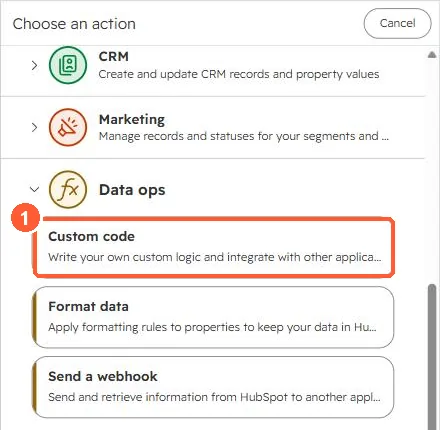
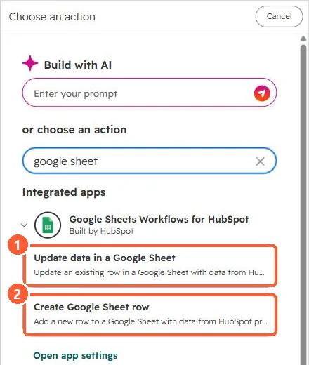
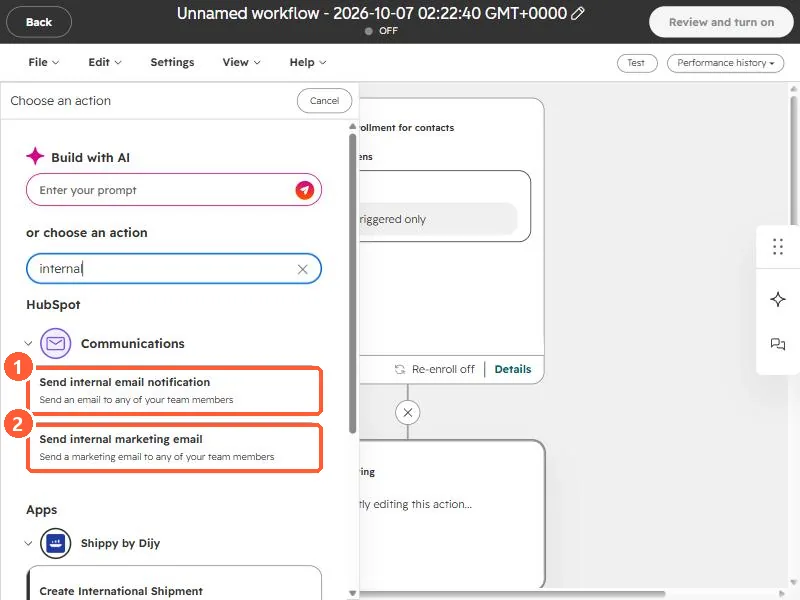
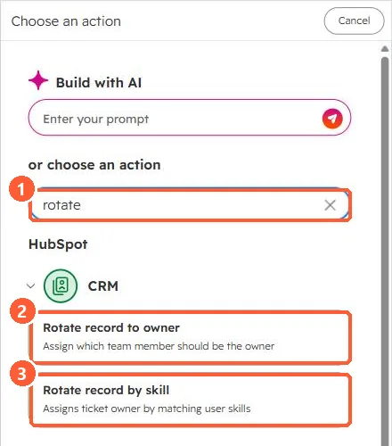
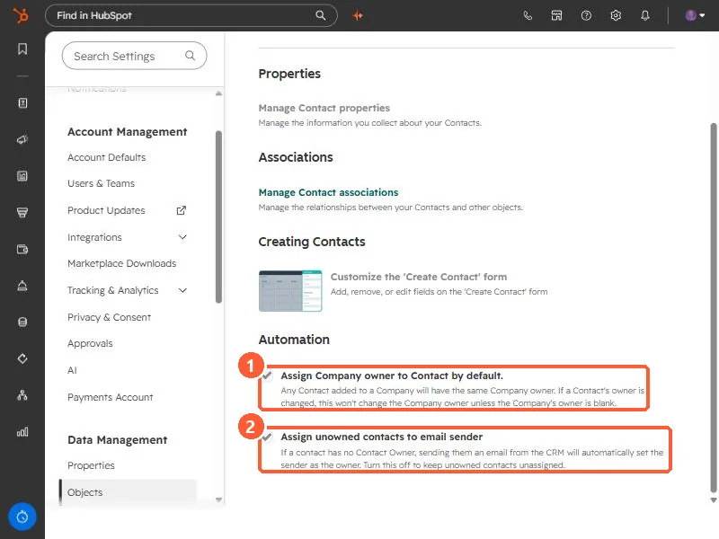

Short answer
Workflow actions do the work after enrollment. Custom code runs Node.js (Python in beta) with inputs from event.inputFields and outputs through callback; it must finish within 20 seconds and 128 MB, and HubSpot retries rate-limit and 5xx errors for up to three days, but only if you throw the error. Google Sheets actions create or update rows mapped by column header. Internal email notification alerts users and teams. Rotate record to owner spreads records across users with a Sales or Service Professional seat. And two contact settings can change owners without any workflow at all.
1. Custom code
In the workflow editor, add an action and pick Custom code from the Data ops group (1):


exports.main = async (event, callback) => {
const email = event.inputFields['email'];
try {
// call another system here
callback({ outputFields: { domain: email.split('@')[1] } });
} catch (err) {
// throw so HubSpot retries rate-limited calls
throw err;
}
};- Inputs and outputs are typed fields in the action panel. Declare outputs so later actions, such as Edit record, can use them.
- Limits: finish within 20 seconds and use at most 128 MB of memory. Exceeding either fails the action.
- Retries: if a call fails with a rate limit error, or a 429 or 5xx from axios or
@hubspot/api-client, HubSpot retries for up to three days, starting one minute after the failure, with gaps growing to at most eight hours. In Node.js you must throw the error in the catch block, in Python raise it in the except block. Swallowing it means no retry and a silent success. - Secrets: keep tokens in the action's secrets, never in the code. Test accounts need OAuth or an app token; developer API keys do not work there.
- Logs are in the workflow's action logs.
See API rate limits for the limits your code's API calls share.
2. Google Sheets actions
Search the action picker for "Google Sheet". With the Google Sheets integration installed there are two actions: Update data in a Google Sheet (1) and Create Google Sheet row (2).


Map each value by choosing the sheet's column header, so keep the header row stable. Values from earlier actions, such as Format data, can be sent as action outputs. For a one-off file instead of a live sheet, see exports.
3. Internal notifications


- Send internal email notification (1) emails specific users, teams or owners, works in every workflow type, and supports tokens from the enrolled record.
- Send internal marketing email (2) sends an automated marketing email to specific addresses or to an address held in a property. It needs Marketing Hub Professional or Enterprise.
- Send in-app notification alerts users inside HubSpot.
None of these email the enrolled contact. For that, use Send email with an automated marketing email, see marketing emails.
4. Rotate record to owner
Search "rotate" to find Rotate record to owner (2) and Rotate record by skill (3), which is for tickets.


- It assigns enrolled records evenly between chosen users or a team, on the owner property or any custom user property.
- Users must be active and have a Sales or Service Hub Professional or Enterprise seat. Core and View-Only seats and users who have not accepted their invite are greyed out.
- For teams, only main team members with those seats are included.
- Each Rotate action keeps its own count, so two in one workflow do not share a sequence.
- If the owner property syncs to Salesforce, HubSpot warns the action may not work as expected.
For a one-time bulk assignment, use an update-only import instead, see imports.
5. Owners that change with no workflow
If contact owners change and no workflow did it, check Settings, Objects, Contacts, Setup, Automation:


- Assign Company owner to Contact by default (1): a contact added to a company gets the company's owner. Changing the contact's owner does not change the company's, unless the company has none.
- Assign unowned contacts to email sender (2): the first user to email an unowned contact from the CRM becomes its owner. HubSpot says it is on by default and also applies to one-to-one emails received and logged.
Turn the second one off if support or ops users take ownership of leads by emailing them, or if a rotate workflow should assign owners. Turning it off does not change owners already set; check the contact's owner history.
6. What is changing for 2027
- Python in custom code is in beta next to Node.js.
- AI writes the code. In the Agent Hub workflow builder, you can describe what a custom code step should do and Breeze Assistant generates the code. Review it against the limits above before turning the workflow on. See HubSpot AI settings and agents.
- Dated API versions inside code. Calls your custom code makes to v4 or 2025-09 APIs lose support in March 2027. See API versioning.
Common questions
My custom code failed with a 429 and was not retried.
The error was caught and not thrown. Throw it (Node.js) or raise it (Python) so HubSpot retries.
Why is a user missing from Rotate record to owner?
They need an active Sales or Service Hub Professional or Enterprise seat and an accepted invite, and for teams they must be a main member.
Who changed this contact's owner?
Check the owner history on the record. If no workflow did it, the email-sender or company-owner settings probably did.
How long can custom code run?
20 seconds, with up to 128 MB of memory.
Sources
- HubSpot developer docs: Custom code actions
- HubSpot Knowledge Base: Optimize processes with workflows and other tools
- HubSpot Knowledge Base: Choose your workflow actions
- HubSpot Knowledge Base: Add data to Google Sheets with workflows
- HubSpot Knowledge Base: Use workflow action outputs
- HubSpot Knowledge Base: Assign and rotate record owners using workflows
- HubSpot Knowledge Base: Assign ownership of records